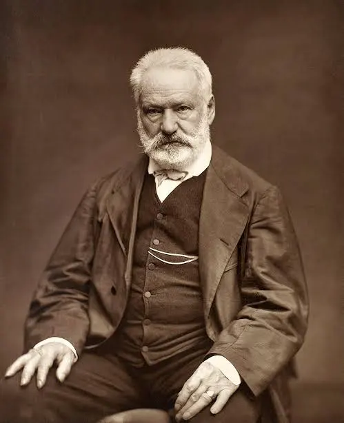
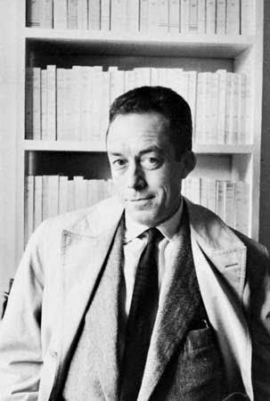
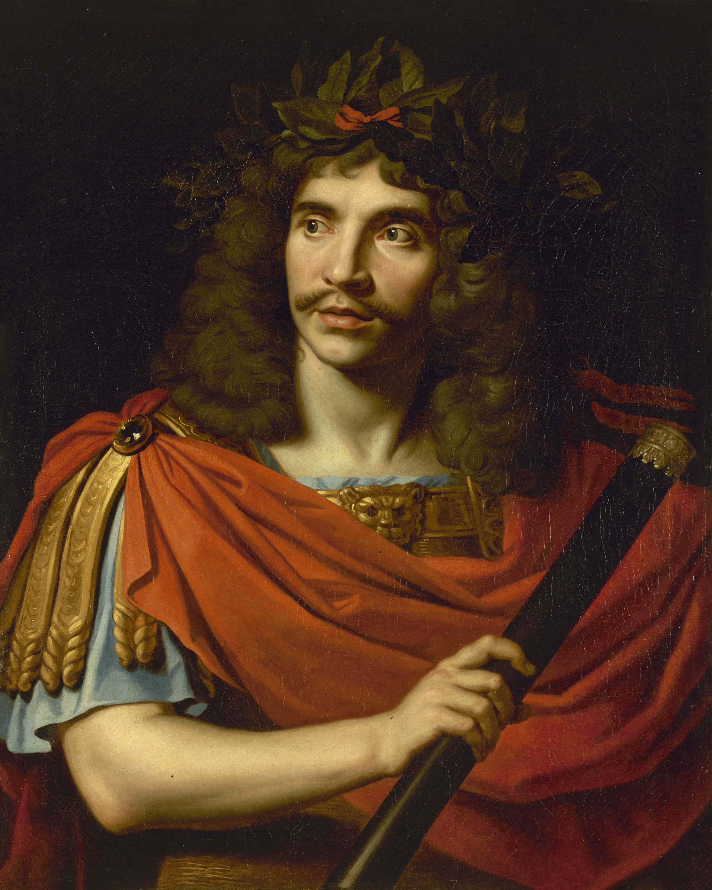
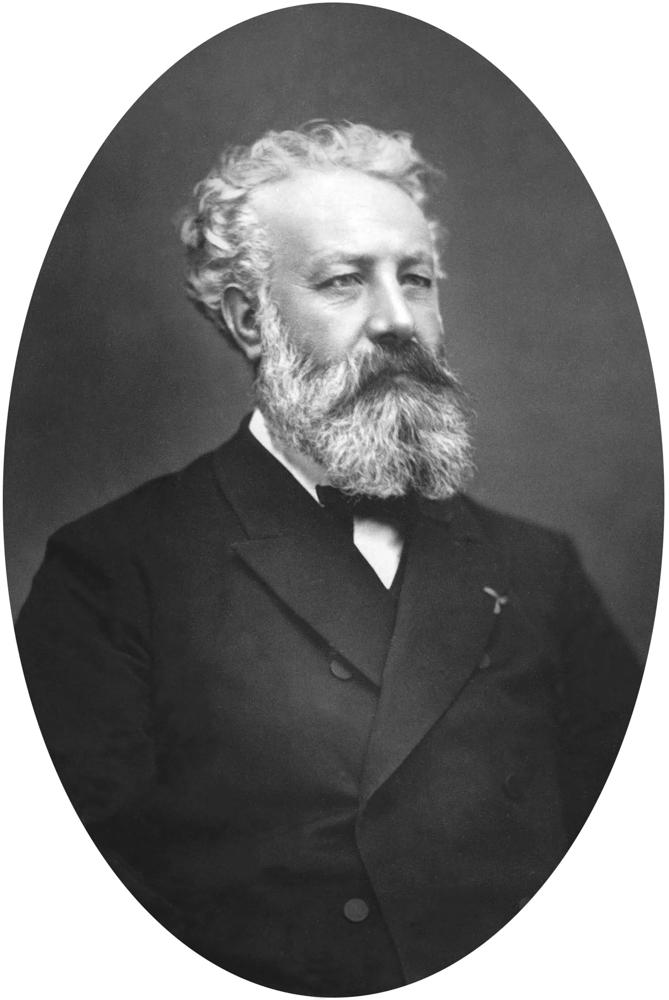
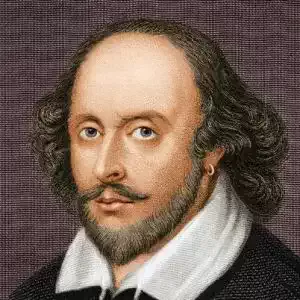

1. Victor Hugo
Victor Hugo est un célèbre écrivain et poète français du XIXe siècle.
Œuvres célèbres : Les Misérables, Notre-Dame de Paris.

Découvrez les écrivains les plus célèbres
Notre bibliothèque rassemble des écrivains célèbres de différentes époques et nationalités. Découvrez leurs biographies et leurs œuvres.
Victor Hugo est un célèbre écrivain et poète français du XIXe siècle.
Œuvres célèbres : Les Misérables, Notre-Dame de Paris.

Albert Camus est un écrivain, philosophe et journaliste français.
Œuvres célèbres : L'Étranger, La Peste.

Antoine de Saint-Exupéry est un écrivain et aviateur français.
Œuvres célèbres : Le Petit Prince, Vol de nuit.

Molière est un grand dramaturge français, connu pour ses comédies.
Œuvres célèbres : Le Malade imaginaire, L'Avare.

Jules Verne est un écrivain français célèbre pour ses romans d'aventure et de science-fiction.
Œuvres célèbres : Vingt mille lieues sous les mers, Le Tour du monde en quatre-vingts jours.

William Shakespeare est un dramaturge et poète anglais très célèbre.
Œuvres célèbres : Hamlet, Roméo et Juliette.
